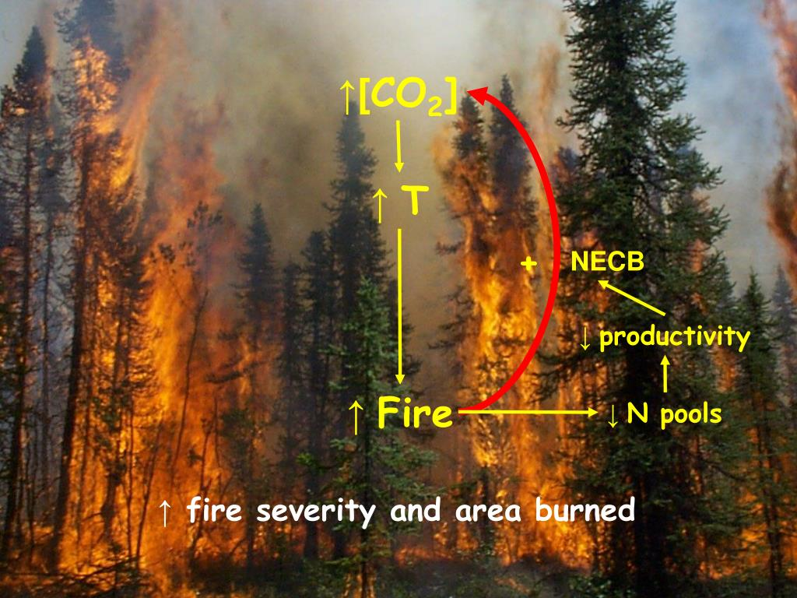
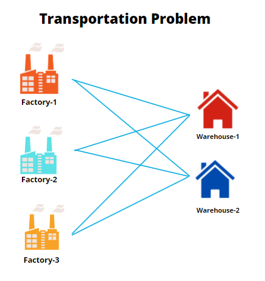
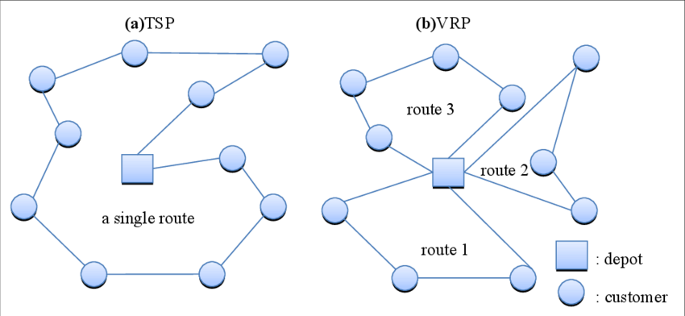

Analysis of wildfire behavior for two regions, Columbus and Denver
Communicating the results to the stakeholders to make data driven decisions
S: "Analyzing Wildfire" T: "Extracted the data from scratch" A: "Robust Data Analysis" R: "Data driven decision"

Conducted Variable Selection and applied PCA to address a higher dimension problem. Subsequently, employed NN,
LDA, KNN algorithms to classify this dataset. Successfully determined the number of optimal clusters through
utilization of K-Means and Hierarchical Clustering methods.
Formulated Linear Regression, KNN, and RF for precise prediction of snail ages. These models were enriched with
advanced techniques including 10-Fold CV, parameter standardization specifically to KNN, and rigorous subset selection
methodologies. These efforts ensured production of dependable and accurate outputs.

Developed optimization models using Pulp in Python and Lpsolve in R, resulting in successful minimization of operation costs adhering to production constraints. This led to annual cost savings of $150,000 for the MSC corporation.

Given a list of cities and the distances between each pair of cities, what is the shortest possible route that visits each city exactly once and returns to the origin city? This is a symmetric Travelling Salesman Problem.
In this example, I used Euclidean distances, but the TSP model formulation is valid independent of the way in which the individual distances are determined.
Played a pivotal role in successful publications of 3 research papers by leveraging tools such as Beautiful Soup for streamlined Data Scraping, Pandas, Numpy, DDL, and DML for efficient Data Manipulation and Analysis etc.
Conducted in-depth analysis of IPL cricket data to uncover key trends and patterns.
Utilized data visualization techniques to present findings and answer insightful questions about player performance, team strategies, and match outcomes.